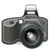
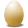
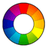
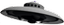
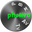

RAW-Fotografie
Zum Verständnis dieses Artikels sind folgende Seiten hilfreich:
 Wer mit digitalen Kameras aus dem mittleren bis hohen Preissegment arbeitet, hat meist die Möglichkeit, eigene Bilder entweder als JPEG- und/oder als RAW-Datei zu speichern. Die RAW-Datei enthält hierbei die „rohen“ Bildinformationen, welche der Bildsensor liefert und die von der Kamera weitestgehend unbearbeitet bleiben. Da diese Bilddateien deutlich größer und mit vielen Anwendungsfällen – wie z.B. dem Hochladen ins Internet – inkompatibel sind, müssen sie zunächst in das JPEG- oder ein anderes gängiges Bildformat umgewandelt werden. In Anlehnung an die analoge Fotografie bezeichnet man diesen Vorgang als Entwicklung. Die RAW-Datei entspricht somit dem Negativ, das JPEG-Bild einem Abzug.
Kameras, welche dem Benutzer den Zugriff auf die RAW-Dateien bieten, haben in der Regel eine spezielle Software beiliegen, mit welcher die Bilder entwickelt werden können. Diese Software ist meistens nur für Windows oder Mac OS X verfügbar und kann unter Linux nur im Idealfall mittels Wine genutzt werden. Viele native Bildanzeige- und Bildverwaltungsprogramme können aber bereits mit RAW-Dateien umgehen.
Eine weitere Erleichterung bei RAW-Dateien kann die Konvertierung in das DNG-Format (digital negative) bedeuten. Dieses standardisierte Format versucht, den Wildwuchs der unterschiedlichen herstellerspezifischen RAW-Formate der Kamerahersteller zu beenden. Es folgt eine Auswahl an Programmen, welche auf die Verwaltung, Bearbeitung und Anzeige von RAW-Dateien spezialisiert sind.
Programme¶
RAW-Bearbeitung¶
In alphabetischer Reihenfolge.
Aftershot Pro¶
Beim kommerziellen AfterShot Pro handelt es sich quasi um den Nachfolger von Bibble, dessen Entwicklerteam Ende 2011 von der Firma Corel übernommen wurde. Eine Testversion bietet für 30 Tage den vollen Funktionsumfang und kann später als Vollversion freigeschaltet werden. Unter Umständen von Vorteil ist, dass das Programm plattformübergreifend ausgelegt ist.

Darktable¶
Ein noch relativ junges, aber sich rasant entwickelndes Projekt ist Darktable. Der primäre Einsatzbereich ist die Verwaltung und Bearbeitung von RAW-Dateien. Das Programm besteht aus zwei Teilen:
einer Bildverwaltung im Leuchttisch-Modus (Lighttable)
einer Bildbearbeitung im Dunkelkammer-Modus (Darkroom)
Das Programm beherrscht darüber hinaus auch Tethered Shooting. Als Lizenz wird die GPL in der Version 3.0 verwendet.

LightZone¶
LightZone ist ein ehemals kommerzieller RAW-Konverter, der inzwischen Open Source ist und Java voraussetzt. Durch das integrierte Zonen-System insbesondere für S/W-Bilder geeignet.

Raw Therapee¶
RawTherapee war in der Vergangenheit zwar kostenlos nutzbar, aber kein Open-Source-Programm. Anfang 2010 hat sich der Entwickler Gábor Horváth jedoch entschieden, die Anwendung unter der GPL-Lizenz zu veröffentlichen. In Zusammenarbeit mit weiteren Entwicklern sind daraus die freien Versionen 3.x und 4.x entstanden, die auch für Windows und Mac OS X erhältlich ist.
Erwähnenswert beim Stichwort Raw Therapee ist noch die RawPedia  , eine umfangreiche Dokumentation zur RAW-Fotografie.
, eine umfangreiche Dokumentation zur RAW-Fotografie.

UFRaw¶
UFRaw ist ein weiteres Programm zum Auslesen, Bearbeiten und Umwandeln von RAW-Bildern. Es kann entweder als selbständiges Programm oder als Erweiterung für GIMP verwendet werden. Auch die Einbindung in Fotoxx ist möglich. Eine Liste der unterstützten Kameramodelle findet sich auf der Homepage des zugrunde liegenden Programms dcraw .
Sonstige¶
| Weitere erwähnenswerte freie Programme (ohne eigenen Artikel) | ||
| Name | Beschreibung | Installation/Paket |
| Rawstudio | Lesen, Bearbeiten und Umwandeln von Bildern. GTK+-basiert und ausgelegt auf große Anzahl an Bildern. | Personal Package Archiv [4] |
|  Photivo | Programm mit steiler Lernkurve, aber teils sehr flexiblen und mächtigen Effektwerkzeugen | Personal Package Archiv [4] |
| GTKRawGallery | Arbeitsablauforientiertes Bildbearbeitungsprogramm | Personal Package Archiv [4] |
| dcraw | Grundlage der meisten freien RAW-Programme (Kommandozeilenprogramm) | dcraw |
RAW-Betrachter¶
Dieser (unvollständige) Abschnitt ist Programmen gewidmet, die das Anzeigen von RAW-Dateien beherrschen. Informationen zu weiteren Programmen können gerne ergänzt werden.
Geeqie¶
Geeqie ist ein leichtgewichtiger Bildbetrachter, der unter anderem RAW-Dateien innerhalb einer bestehenden Ordnerstruktur anzeigen kann (falls die Kamera als Massenspeicher verbunden ist, auch den Inhalt des Speichermediums). Ein Überblick über die "Ausbeute" ist daher sehr rasch möglich. Umbenennen, Löschen und ein Bewertungssystem sind ebenfalls vorhanden.
Problembehebung¶
Dateidatum auf Aufnahmezeit setzen¶
Während die RAW-Dateien die Aufnahmezeit anzeigen, haben die umgewandelten Dateien zumeist das Erstellungs- bzw. Speicherdatum. Möchte man das wieder zurücksetzen auf die Aufnahmezeit, geht das beispielsweise mit ExifTool (für alle Bilder im aktuellen Verzeichnis):
exiftool '-DateTimeOriginal>FileModifyDate' .
32-Bit-Systeme¶
Der Umgang mit den im Regelfall sehr großen RAW-Dateien erfordert viel Arbeitsspeicher. Rechner mit 32-Bit-Betriebsystemen stoßen hier schnell an ihre Grenzen. Daher sind ein Mehrkern-Prozessor, ein 64-Bit-Betriebssystem [3] und mindestens 4 GiB RAM empfehlenswert.
Kamera-Fernsteuerung¶
Hochwertige Digitalkameras können auch direkt über den Rechner angesteuert werden. Grundlagen sind im Artikel gtkam beschrieben. Grafische Oberflächen bieten folgende Programme:
Darktable (siehe oben)
Entangle
- Kamera-Fernsteuerung (Canon, Nikon)pkTriggerCord
- Kamera-Fernsteuerung (Pentax)
Links¶
RAW-Bildverarbeitung unter Linux: Techniken und Anwendungen
 - freiesMagazin, 10/2012
- freiesMagazin, 10/2012RAW - Bessere Fotos
- mit detaillierter Vergleichstabelle der oben genannten Programme, Pro-Linux, 08/2012Rohdatenbildformate (Raw) unter Linux
– Vergleich verschiedener Programme, 08/2010RAW-Samples
- RAW-Beispielbilder zum TestenMetadaten
 in Dateien eingebettete Informationen
in Dateien eingebettete InformationenGrafik
Programmübersicht
- Erstellt mit Inyoka
-
 2004 – 2017 ubuntuusers.de • Einige Rechte vorbehalten
2004 – 2017 ubuntuusers.de • Einige Rechte vorbehalten
Lizenz • Kontakt • Datenschutz • Impressum • Serverstatus -
Serverhousing gespendet von